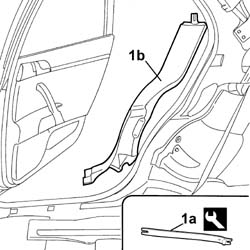

7040H48 Passenger compartment rear wheel arch liner (one), left or right - R.R. with interfering components removed
- Path
- Procedures > 70 FITTINGS > 7040 BODY INTERIOR UPHOLSTERY AND TRIM > 7040H ROOF PANEL AND PILLAR LINING > 7040H48 Passenger compartment rear wheel arch liner (one), left or right - R.R. with interfering components removed
- Kind
- repair procedure (removal / refitting; the operation number is the code)
- Applies to
- all engines; all production periods
- Interactive page
- https://sloeber94.github.io/elrnDB-lThss/en/#/458484
Applies to: all engines; all production periods
 Removing
Removing
 Refitting
Refitting- Release the rear door housing seal.
1. Use the tool (1a) to release the wheel arch liner (1b).
 | Description | Code | Function |
|---|---|---|---|
1a | Knife | 1.878.077.000 | Removing rear wheel arch liner |

Applies to: all engines; all production periods
Refitting
Removing- Fit the wheel arch linder in place until the click of the retaining springs is heard.
- Reposition the rear door housing seal.